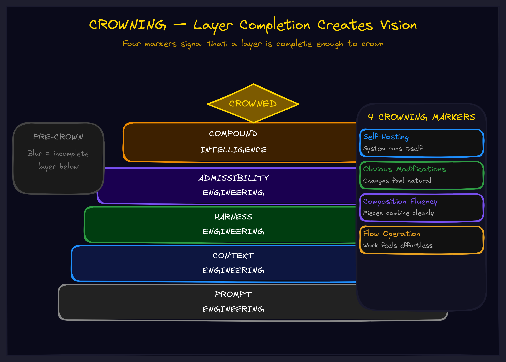

May 2026Level 7 · EmergenceThe operator
Crowning: The Moment Your System Comes Alive
You build layer after layer. Skill on top of skill. Then something shifts — the structure stops being something you maintain and starts being something that maintains you. That shift has a name.

The Moment Everything Changes
You have been grinding at something for weeks, months, maybe years. Learning the parts. Practicing the patterns. Building the layers. Each one takes effort. Each one requires conscious attention to apply.
Then one day you sit down and realize: you are not doing it anymore. It is doing you.
A programmer describes it as the moment code starts "writing itself." A musician describes it as the moment the instrument disappears. A strategist describes it as the moment the framework starts revealing its own next moves. The structure you built — painstakingly, layer by layer — has crossed a threshold. It is no longer a construct you maintain. It is a living system that carries you.
This is crowning. And it is not magic. It is engineering.
What Crowning Actually Is
Crowning is what happens when accumulated layers of competence reach critical mass. It is the phase transition — ice to water, water to steam — where quantity of layers becomes quality of operation.
Before crowning, you carry the tower. You maintain the structure. You push to operate. Every application requires effort because you are running the system from outside.
After crowning, the tower carries you. The structure maintains itself. Operation becomes flow. You are inside the system, and the system provides everything you need.
Four markers tell you crowning has occurred:
1. Self-Hosting
The system can run itself. A crowned framework can explain its own use. A crowned skill can teach its own application. The structure hosts itself — defining itself in its own terms, interpreting its own processes, modifying itself through its own mechanisms.
This is not infinite regress. It is stable ground. When a programmer crowns in functional programming, they can use FP to explain FP. When a strategist crowns in systems thinking, they can apply systems thinking to improve their systems thinking. The self-reference creates a platform, not a spiral.
2. Obvious Modifications
Before crowning, improvements feel uncertain. "Maybe this would be better?" After crowning, they are visible. "This obviously needs X." The structure reveals its own extension points. You are not guessing at improvements — you are reading requirements that the structure itself makes visible.
This is the single most practical payoff. Crowned operators can see what needs to change without analysis paralysis. The system tells them.
3. Composition Fluency
Parts combine without friction. You are not struggling to connect components — connection is the natural mode. Each piece knows how to fit with other pieces. The grammar of the structure is internalized.
"And this is a function and this is a function and this composes these two and this composes that one" — each step obvious, each composition natural, the whole structure growing itself.
4. Flow Operation
Effort decreases while output increases. Cognitive load drops because you are not maintaining the structure anymore — you are flowing through it. The tower carries you instead of you carrying the tower.
This is not laziness. This is efficiency so deep that it feels effortless. The infrastructure of competence is so thoroughly built that operating within it requires almost no overhead.
How Crowning Happens
Crowning is not random. It is not a gift. It is the result of a specific process: completing layers properly, one at a time, all the way up.
Each layer must be genuinely solid before you advance. Not "good enough." Not "I think I understand this." Solid. Tested. Producing reliable signals. When you skip a layer — when you advance before the current layer is truly complete — you do not get premature crowning. You get collapse.
The practitioners who crown are the ones who did every layer. The ones who collapse are the ones who tried to skip to the top.
This is brutally practical. Want to crown in your domain? Do not look for shortcuts. Complete every layer. Verify each one. Then complete the next. Crowning will come when the stack is ready — and not a moment before.
The Organizational Crowning
Everything above applies to individuals. But crowning scales to teams and organizations.
When a team crowns in a methodology — when they have genuinely internalized the layers and the methodology starts running itself — the team operates at a qualitatively different level. Decisions are faster because the framework reveals the right answer. Coordination is smoother because the shared structure provides the grammar. New challenges are absorbed because the system can extend itself.
Most organizations never crown because they never complete the layers. They adopt a framework, use it for a while, then switch to the next one before the first one is solid. Layer after abandoned layer. No crowning possible because no stack was ever completed.
The organizations that do crown — in their operational methodology, in their strategic framework, in their AI collaboration doctrine — have an advantage that is nearly impossible to replicate. You cannot buy crowning. You cannot hire it. You can only build it, layer by layer, with the discipline to complete each one before advancing.
Before crowning, you carry the tower. After crowning, the tower carries you. The question is whether you have the patience to complete every layer.
The Crown Check
For any skill, framework, or system you are building — run this diagnostic:
1. Enumerate the layers. What are the distinct levels of understanding or capability you have built? Can you name them?
2. Check each layer. Is each one genuinely complete? Not "good enough" — genuinely solid. Producing reliable results. Tested against reality.
3. Test for crowning markers.
- Self-hosting? Can you use the skill to extend the skill?
- Obvious modifications? Can you see what it needs next without analysis?
- Composition fluency? Do the parts connect naturally?
- Flow operation? Is effort decreasing while output increases?
4. If crowned: Operate from the crown. Trust the flow. Let obvious modifications guide extension. Stop efforting where flowing is available.
5. If not crowned: Identify which layers need more work. Return to layer completion. Do not try to force crowning — complete the stack and it will come.
The Deeper Pattern
Crowning is what makes compound growth possible. Without crowning, each new capability requires its own maintenance overhead. The more you know, the more you have to manage. Growth creates drag.
With crowning, completed systems become infrastructure that costs nothing to maintain. They run themselves. They extend themselves. Each crowned system provides a platform for the next, and that platform costs zero effort to maintain. Growth creates leverage.
This is the difference between organizations that scale and organizations that stall. Scaling organizations crown their systems — each layer complete, each framework alive, each competence self-hosting. Stalling organizations accumulate incomplete layers — each one adding overhead, none of them providing lift.
The path to crowning is not complicated. It is just disciplined. Complete every layer. Verify each one. Advance only when the foundation is solid. Then crown — and let the tower carry you.
Go Deeper
Crowning emerges from the Towering methodology — the layer-by-layer building process that produces crowned systems. It connects to Calibration (knowing when your layers are genuinely solid) and Thermal Dynamics (managing capacity while building).
Explore the full framework library →
Want to build systems that crown? We work directly with leadership teams to implement compound frameworks — layer by layer, with the discipline to see each one through.